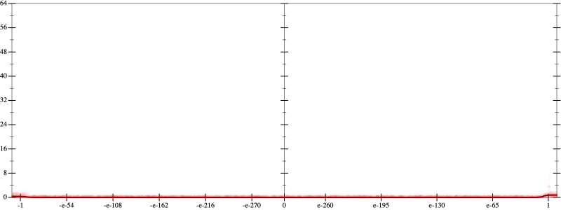
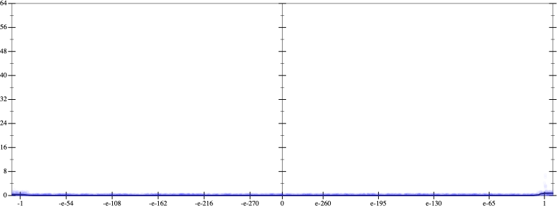
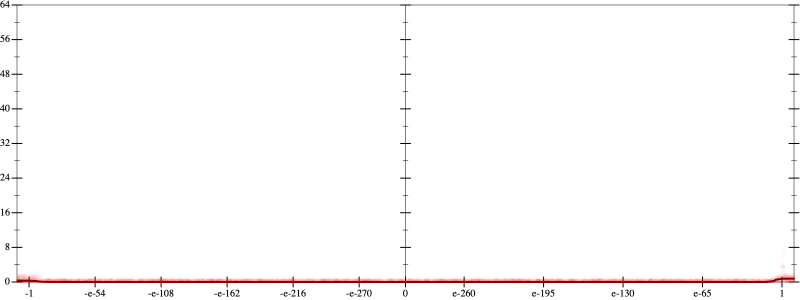
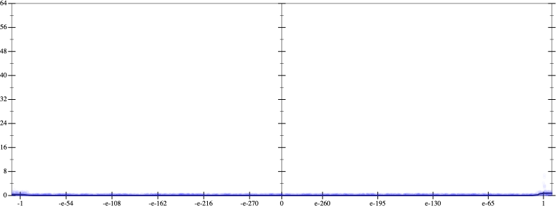
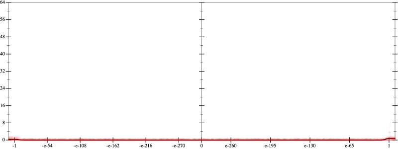
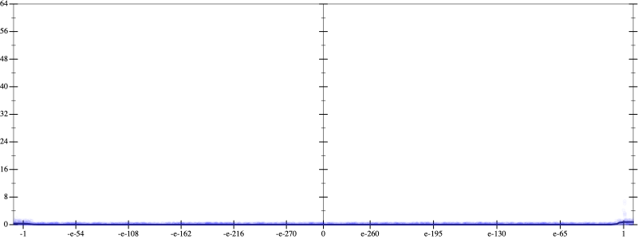

Error
 
Bits error versus x
Bits error versus x
Results
Initial program 0.0
Time bar (total: 24.2s)Debug log
herbie shell --seed 329334287
(FPCore (x)
:name "4"
:pre (and (>= x -10000000000.0) (<= x 10000000000.0))
(+ (+ (+ (+ 1.0 (* -4.0 x)) (* 3.0 (* x x))) (* -0.666667 (* (* x x) x))) (* 0.041667 (* (* (* x x) x) x))))